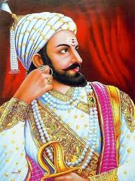

Shivaji I was an Indian ruler and a member of the Bhonsle dynasty. Shivaji inherited a fiefdom from his father who served as a retainer for the Sultanate of Bijapur, which later formed the genesis of the Maratha Kingdom. In 1674, he was formally crowned the Chhatrapati of his realm at Raigad Fort.